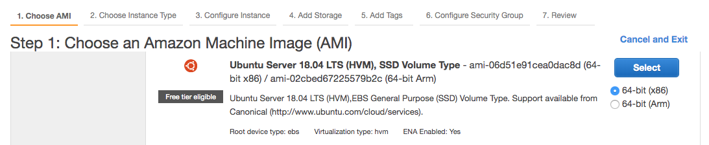
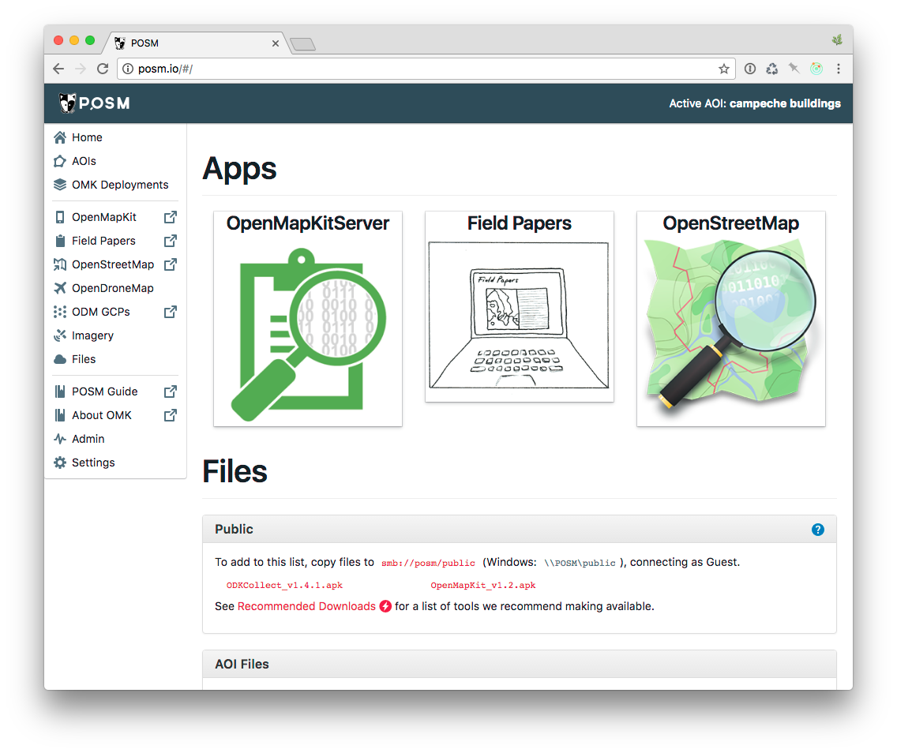

Cloud Installation¶
Todo
This section needs to be edited and updated for the most recent release of POSM.
Interested in running POSM in the cloud? This type of setup is great for semi-connected instances when you want the integration of OpenMapKit/Field Papers/OSM but have more regular connectivity with your surveyors.
First, this guide will walk through how to set things up in Amazon Web Services, specifically EC2. If you like another flavor or cloud services such as Azure, this process will still work but may look slightly different. This guide will also not show you how to get an AWS account, they already have great documentation.
Get a Fully Qualified Domain Name¶
Before installation, you should choose a domain name and host to use to access your new POSM and configure it with your DNS provider. If you don’t do this, you won’t be able to access the OpenStreetMap interface.
Instance Setup¶
The first thing you will need to do is start a new instance. In your AWS EC2 Dashboard click on Launch instance. Scroll all the way down and find Ubuntu 18.04 LTS. The posm-build process only works on Ubuntu 18.04 at this time.
After selecting your instance type you’ll need to fill out a couple more things. Recommended specs for your instance are:
- We’ve used a t2.large
- At least 2GB RAM, 8GB+ preferred
- If you use less than 8GB, you will not be able to run the OSM part of POSM
- OpenMapKit Server runs happily on 2GB
- If using SuperPOSM (OpenDroneMap), the more RAM the better
- At least 10GB of attached storage
- Not an issue unless you have lots of photos or will be processing OpenDroneMap images
- Open ports 22 and 80
- 22 is needed to SSH into the server for administration and setup
- 80 is needed to view the various resources
Configure DNS¶
After the instance is created, also create an elastic IP and assign it to the instance you just created. AWS has a guide for this.
Now configure the DNS. Create an @ record and point it to the IP address that you just created and assigned to your instance.
Sample DNS records:
my-posm.example.org A 1.2.3.4
osm.my-posm.example.org CNAME my-posm.example.org
POSM Cloud Install¶
POSM Cloud uses posm-build to install because the live ubuntu instance for physical devices doesn’t work. The process take a little longer and requires a little bit of command line knowledge.
To configure POSM on your cloud host, connect to it using ssh and run the following commands.
# become root
sudo -i
# update instance for security patches
apt-get update && apt-get upgrade
# install git if necessary
apt update && apt install --no-install-recommends -y git
# clone this repository
git clone https://github.com/AmericanRedCross/posm-build
# edit your settings (posm_hostname, posm_domain)
sensible-editor posm-build/kickstart/etc/settings
The important things to edit are posm_hostname and posm_domain. Set these equal to your hostname and domain that your purchased earlier. You can comfortably ignore all the wifi settings. You can enable basic auth for the whole site by uncommenting the auth=true on line 42 and editing the user and password to the desired values.
# network
posm_network="172.16" # class B
posm_wlan_subnet="$posm_network.1"
posm_lan_subnet="$posm_network.2"
posm_wlan_ip="$posm_wlan_subnet.1"
posm_lan_ip="$posm_lan_subnet.1"
posm_wan_netif="eth0"
posm_lan_netif=""
posm_wlan_netif="wlan0"
posm_ssid="POSM"
posm_wpa_passphrase="awesomeposm" # 8..63 characters
posm_wifi_channel="1"
posm_wifi_80211n="1" # set to 0 to disable 802.11n
posm_wifi_wpa="2" # set to 0 to disable passwords
posm_hostname="posm"
posm_domain="io"
lan_domain="lan"
posm_fqdn="${posm_hostname}.${posm_domain}"
osm_fqdn="osm.${posm_fqdn}"
...
# web
# auth=true # uncomment this to enable web authentication
auth_user=POSM
auth_password=awesomeposm
The last thing is to install everything. This will take a while; go get a snack and come back.
/root/posm-build/kickstart/scripts/bootstrap.sh base virt nodejs ruby gis \
mysql postgis nginx osm fieldpapers docker omk tl carto tessera admin
The above command will install everything needed to run POSM Cloud but will not install OpenDroneMap.
To add SuperPOSM capabilities (OpenDroneMap + GeoTIFF processing), use the following instead.
/root/posm-build/kickstart/scripts/bootstrap.sh base virt nodejs ruby gis \
mysql postgis nginx osm fieldpapers docker omk tl carto tessera admin \
redis opendronemap imagery
OMK Server Settings¶
OpenMapKit server does not apply authentication out of the box; you will need to set it up to ensure that sensitive information cannot be viewed on your cloud instance. This step requires more command line knowledge.
If the POSM cloud install was successful, then you should now be able edit your OMK server settings. You will need to uncomment the lines starting with “auth” and add in the credentials you would like.
sudo sensible-editor /etc/omk-server.js
Your screen should looks something like this.
module.exports = {
name: 'OpenMapKit Server',
description: 'OpenMapKit Server',
port: 3210,
dataDir: __dirname + '/data',
pagesDir: __dirname + '/pages',
hostUrl: 'http://omkserver.com',
osmApi: {
server: 'http://osm.omkserver.com',
user: 'POSM',
pass: ''
}
};
You’ll need to change it to look something like this. Notice the added comma after the last `}` for osmApi
module.exports = {
name: 'OpenMapKit Server',
description: 'OpenMapKit Server',
port: 3210,
dataDir: __dirname + '/data',
pagesDir: __dirname + '/pages',
hostUrl: 'http://omkserver.com',
osmApi: {
server: 'http://osm.omkserver.com',
user: 'POSM',
pass: ''
},
// To do simple authentication, you can have an object like so:
auth: {
user: 'username',
pass: 'password'
}
};
After saving, just reboot your server and authentication should be working when you go to OMK Server.
Success¶
After everything is configured you can go to your domain and you should see the following screen.
